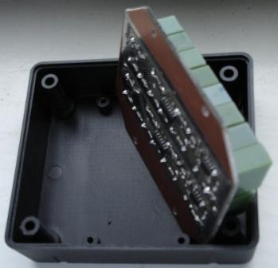
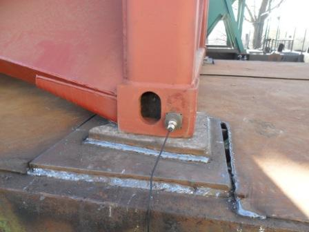
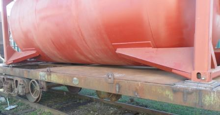
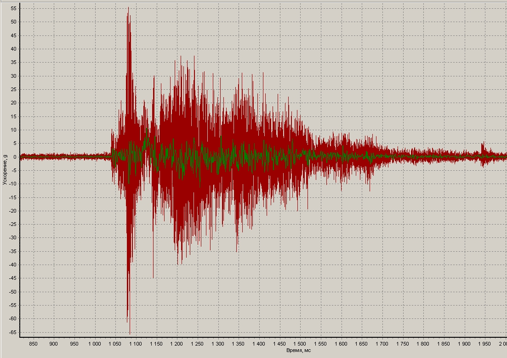

Ударные
испытания
транспорта
ISO
6487:2002 "Road
vehicles -- Measurement techniques in impact tests -- Instrumentation" выдвигает
ряд требований к системе измерения и регистрации при испытаниях
транспортных средств на удар.
"При проведении испытания
должно иметься следующее оборудование:
a) два
акселерометра с минимальным диапазоном амплитуды 200g,
нижним пределом
частот не более 1Гц,
верхним пределом
частот не менее 3000Гц.
b) аналого-цифровая
система сбора данных, способная регистрировать ударные
возмущения в виде графика зависимости "ускорение - время" при
минимальной частоте выборки 1000Гц .
Система сбора данных должна
включать в себя аналоговый
фильтр нижних частот для подавления помех с частотой среза
минимум 200Гц и максимум 20% от скорости дискретизации и
минимальным спадом 40дБ/октава".
Из выпускающихся MEMS-акселерометров для этой задачи
подходят высокочастотные одноосевые акселерометры с диапазоном
измеряемых ускорений ±250g в
диапазоне
частот 0...22000Гц.
Низкочастотные MEMS-акселерометры существенно дешевле,
но их диапазон частот в лучшем случае ограничивается
1600Гц (требуется же не менее 3000Гц)..
Существенно усложняет систему требование использовать аналоговый
фильтр нижних частот (ФНЧ) со спадом не
менее 40дБ/октава.
В
сети можно разыскать литературу, обосновывающую необходимость
применения именно аналоговых фильтров НЧ в этой задаче - не цифровых
фильтров, реализованных на DSP или на микросхемах с переключаемыми
конденсаторами, тем более, не
фильтров, реализованных программно
на компьютере.
Известно,
что фильтр Чебышева обеспечивает самый крутой спад АЧХ, но при этом
вносит существенные фазовые искажения, что приведет к искажению
результатов измерения.
Приемлемым по фазовым характеристикам является фильтр Баттерворта, он также упоминается в ISO
6487:2002 .
Обеспечить спад АЧХ не хуже 40дБ на октаву способен аналоговый ФНЧ
Баттерворта 8-го порядка.
В состав
системы измерения удара входят
два
одноосевых акселерометра
с диапазоном измеряемых
ускорений ±250g
и
диапазоном частот 0...22000Гц


каждый акселерометр находится в отдельном корпусе,
слева - корпус с подключенным кабелем, справа без кабеля..
В
корпусе акселерометра также размещены буферный усилитель, позволяющий
передавать сигнал по кабелю длиной в несколько метров на низкоомную
нагрузку и стабилизатор напряжения.
Каждый из двух акселерометров отдельным кабелем соединяется с блоком обработки/регистрации данных.
В блоке обработки/регистрации данных размещены двухканальный аналоговый фильтр
и плата аналого-цифрового
преобдразователя с памятью - для каждого из двух
акселерометров отдельный канал обработки сигнала.
аналоговый
фильтр
Двухканальный активный
аналоговый фильтр низких частот Баттерворта 8-го порядка реализован
на базе качественных операционных усилителей, в нем используются
прецизионные конденсаторы и резисторы, что
обеспечивает температурную и временнУю стабильность
амплитудно-частотной характеристики (АЧХ) фильтра.

Плата двухканального аналогового фильтра НЧ и часть корпуса
блока записи.
Обработанные фильтрами данные передаются на входы АЦП.
аналого-цифровой преобразователь (АЦП)
Во второй части корпуса блока обработки/регистрации данных
установлена плата 8-канального
АЦП
АЦП 12-разрядный с памятью в 512КБайт для регистрируемых данных,
АЦП подключается кабелем к USB компьютера (ноутбука, нетбука).
Режим работы АЦП (частота выборки, время измерения, старт измерения)
выбирается оператором в компьютерном приложении.
При
работе может использоваться 4 канала АЦП - два канала могут
записывать не обработанные фильтром сигналы непосредсвенно с
акселерометров, еше два - сигналы, обработанные фильтром.
Преобразованные
данные записываются в микросхему памяти на плате АЦП, а по окончании
измерения эти данные из памяти передаются по кабелю USB в компьютер,
где сохраняются в файлы, отображаются в виде графиков.
Питание системы
осуществляется от USB компьютера. Дополнительных источников и кабелей
питания не требуется.


Размещение акселерометров на стойках цистерны
Можно посмотреть ВИДЕО
Испытания ж/д
цистерны на удар ,
График
ускорения, записанного одним акселерометром при сцепке железнодорожного
состава (график, записанный вторым акселерометром, скрыт)..
Темно-красный график - запись сигнала акселерометра без
фильтра;
зеленый график отображает сигнал акселерометра, прошедший через фильтр
НЧ с полосой частот 0,1...200Гц.

Применение
НЧ фильтра с нормированной частотной характеристикой позволяет
получать одинаковые результаты при измерениях
акселерометрами с разными частотными характеристиками (при
условии, что частота среза фильтра НЧ гораздо ниже верхних
граничных частот применяемых акселерометров).